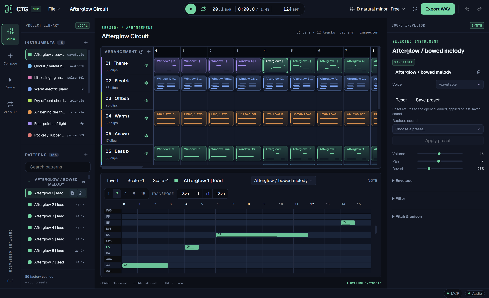

Shape the sound
Pulse, FM, wavetable and more. Edit envelopes, filters and modulation. Save a voice you love, or reset and try again.
A music studio for ideas that won't leave your head. Shape a synth, write a hook, and invite an AI to compose alongside you. Every note stays editable.
A focused workstation, from the first phrase to the final render. Sounds on the left. Your song in the center. Every detail within reach.

Pulse, FM, wavetable and more. Edit envelopes, filters and modulation. Save a voice you love, or reset and try again.
Write in the piano roll or explore theory-guided composition. Turn a motif into a bridge, a response and a finale.
Undo edits, save native projects and export stereo WAV. Your songs work locally, without a cloud synthesis service.
Real tracks from CTG's native engine. Listen first, then open the project in the app and explore the notes behind the sound.
Emotional strings → syncopated funk → a returning hook.
Bright brass, walking bass and a broken backbeat.
A half-time pulse with room to breathe.
Quick-footed melody and a playful octave bass.
Press play to listen. One track plays at a time. No autoplay.
Original audio from your earlier projects. Native songs include editable downloads. ZzFX recordings are listening references.
CTG gives MCP-compatible agents real music tools. They can write notes, choose instruments, arrange sections and render the result—directly in your open session.
“Write an emotional funk song. Give it a memorable hook, a quiet bridge and a finale that brings the melody home.”
Bring your own AI client. CTG supplies the instruments and editing tools; it doesn't include a language model.
{
"mcpServers": {
"ctg": {
"type": "http",
"url": "http://127.0.0.1:7414/mcp"
}
}
}Run CTG, then connect your client on the same computer. Client-specific configuration formats may differ. Prefer a headless session? Use ctg mcp --root ./songs.
Windows desktop + cross-platform Rust CLI.
Desktop requires Microsoft Edge WebView2.